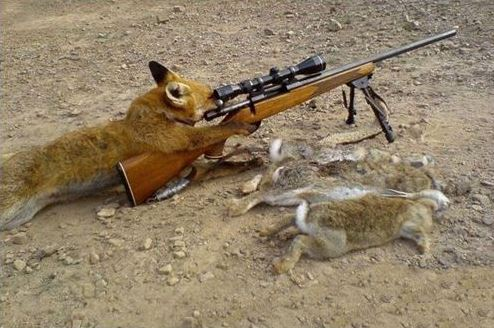
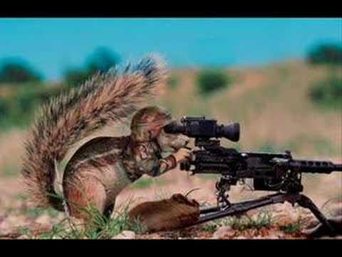

Renard est un terme ambigu qui désigne le plus souvent en français les canidés du genre Vulpes, le plus commun étant le Renard roux (Vulpes vulpes). Toutefois, par similitude physique, le terme est aussi employé pour désigner des canidés appartenant à d'autres genres, comme les genres Atelocynus, Cerdocyon, Dusicyon, Otocyon, Lycalopex et Urocyon.

Le terme écureuil [ekyʁœj] est un nom vernaculaire ambigu qui désigne en français de nombreuses espèces de rongeurs grimpeurs de taille moyenne, parfois même « volants ». Leur queue, plus ou moins touffue selon les espèces, forme un panache ou un plumeau caractéristique.
Il est l’un des principaux animaux de compagnie et compte aujourd’hui une cinquantaine de races différentes reconnues par les instances de certification. Dans de très nombreux pays, le chat entre dans le cadre de la législation sur les carnivores domestiques à l’instar du chien et du furet. Essentiellement territorial, le chat est un prédateur de petites proies comme les rongeurs ou les oiseaux.
Le poil de la marmotte est brun, noir ou marron. Elle a un corps trapu, les oreilles rondes. Ses membres sont courts et puissants avec une longue queue. Sa taille est de 46 à 66 cm pour un poids de 2 à 9 kg. Elle vit de 4 à 10 ans en captivité et de 4 à 8 ans en liberté. Au Canada, elle est appelée « siffleux » car quand il y a un danger, elle émet un sifflement puissant pour donner l'alerte aux autres marmottes, qui vont alors se réfugier dans leur terrier.